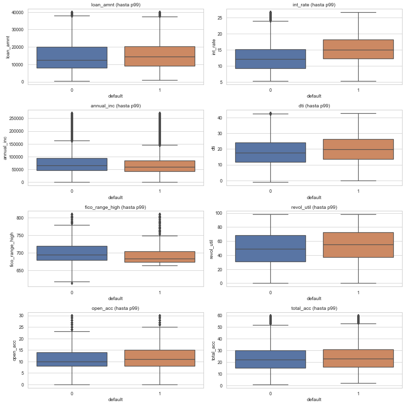
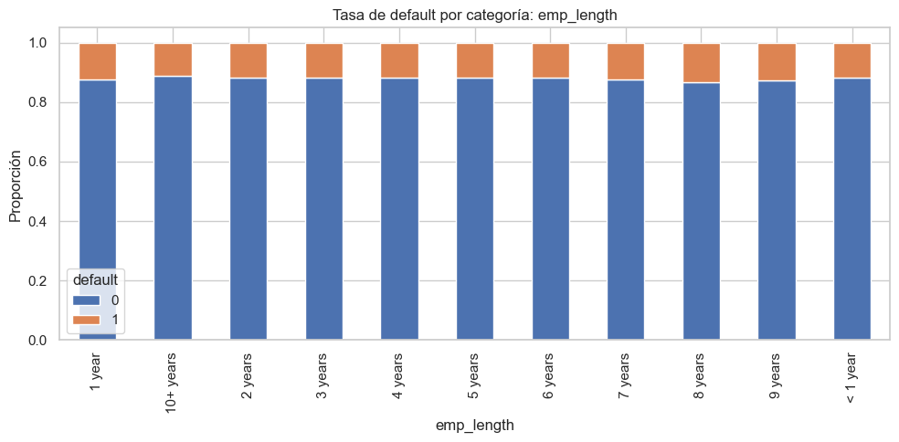
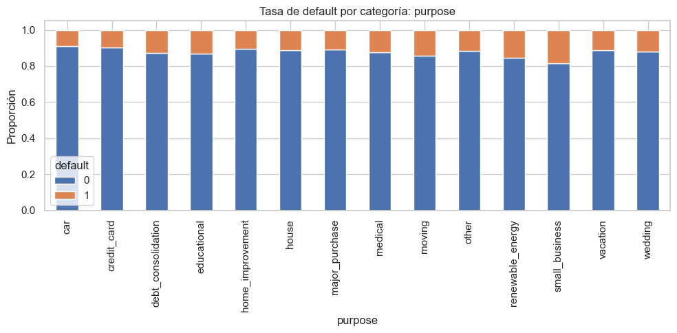
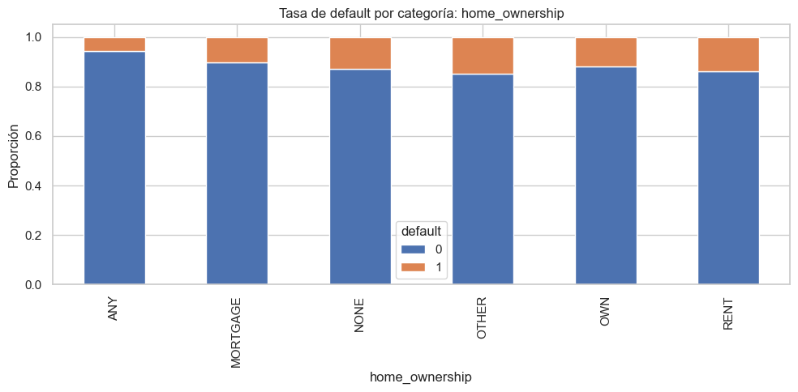
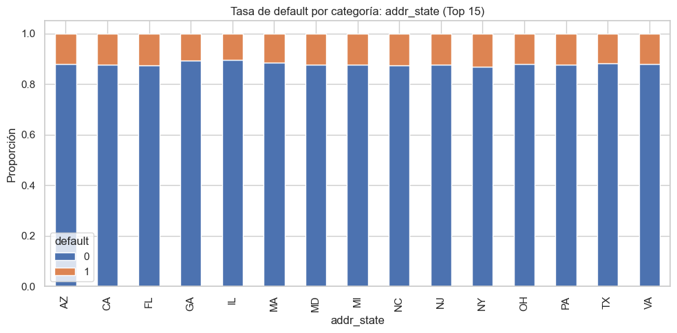
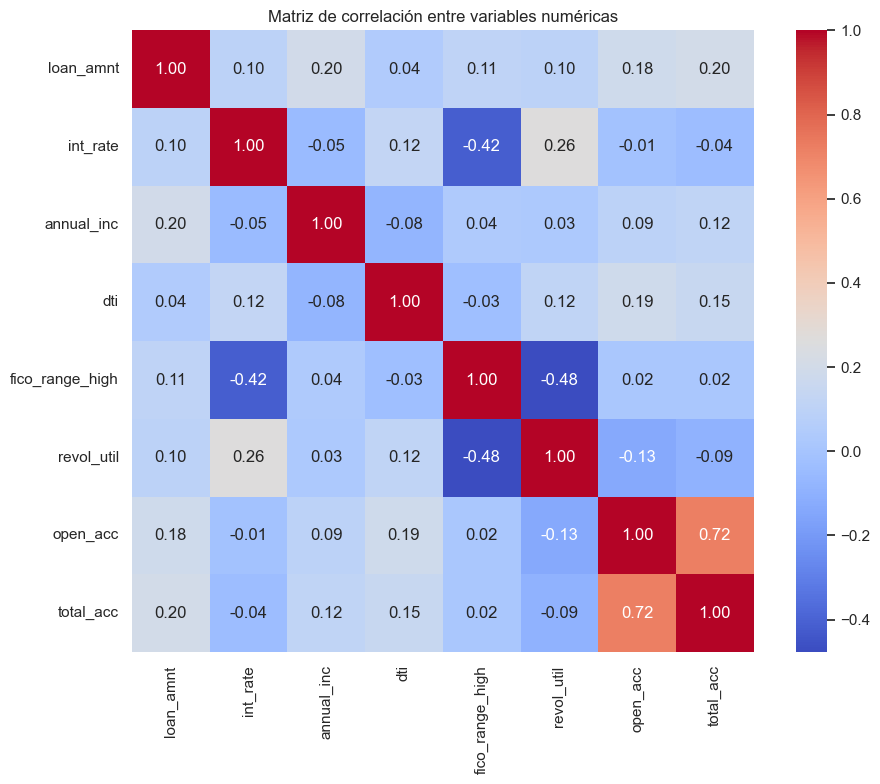
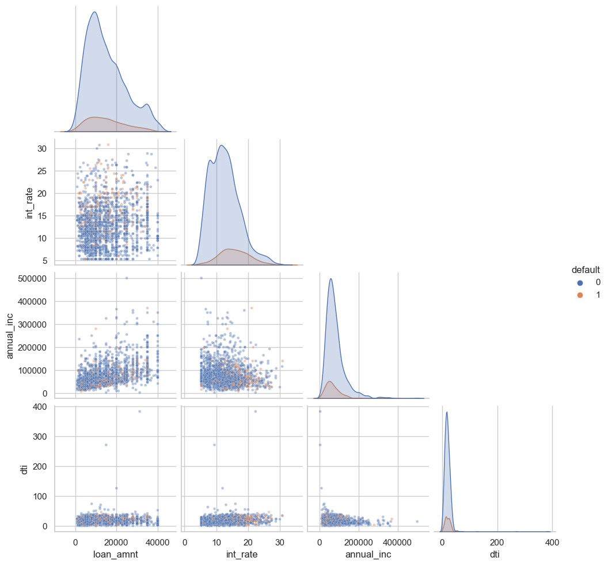

Análisis Exploratorio de Datos (EDA) - Análisis Bidimensional#
En esta sección se estudia la relación entre las variables seleccionadas y la variable objetivo default, así como las relaciones entre variables independientes.
El propósito de este análisis es identificar variables con capacidad explicativa sobre el incumplimiento del préstamo y detectar posibles problemas de redundancia o multicolinealidad que puedan afectar el modelado posterior.
import pandas as pd
import numpy as np
from pathlib import Path
import matplotlib.pyplot as plt
import seaborn as sns
from scipy.stats import ttest_ind, mannwhitneyu, chi2_contingency, pointbiserialr
sns.set(style="whitegrid")
DATA_PATH = Path(r"C:\Users\Daniel Rangel\Documents\MachineLearning\Data\accepted_2007_to_2018Q4.csv.gz")
df = pd.read_csv(DATA_PATH, low_memory=False)
df["default"] = df["loan_status"].apply(lambda x: 1 if x == "Charged Off" else 0)
num_vars = [
"loan_amnt",
"int_rate",
"annual_inc",
"dti",
"fico_range_high",
"revol_util",
"open_acc",
"total_acc"
]
cat_vars = [
"emp_length",
"purpose",
"home_ownership",
"addr_state"
]
Relación entre variables numéricas y la variable objetivo#
En esta subsección se analiza la relación entre las variables numéricas seleccionadas y la variable objetivo default.
Para ello, se utilizan visualizaciones comparativas por clase, diferencias de medias y medidas de asociación entre variables numéricas y la variable binaria de incumplimiento.
fig, axes = plt.subplots(4, 2, figsize=(14, 14), dpi=60)
axes = axes.flatten()
for ax, col in zip(axes, num_vars):
temp = df[[col, "default"]].dropna().copy()
upper = temp[col].quantile(0.99)
temp = temp[temp[col] <= upper]
sns.boxplot(data=temp, x="default", y=col, ax=ax)
ax.set_title(f"{col} (hasta p99)")
plt.tight_layout()
plt.show()

Los diagramas de caja permiten comparar visualmente la distribución de cada variable numérica entre préstamos en default y no default, observando diferencias en medianas, dispersión y presencia de valores atípicos.
num_vs_target_results = []
for col in num_vars:
temp = df[[col, "default"]].dropna()
group_0 = temp[temp["default"] == 0][col]
group_1 = temp[temp["default"] == 1][col]
mean_0 = group_0.mean()
mean_1 = group_1.mean()
diff_means = mean_1 - mean_0
# Mann-Whitney es más robusta aquí por no normalidad
stat_mw, p_mw = mannwhitneyu(group_0, group_1, alternative="two-sided")
# Correlación punto-biserial
r_pb, p_pb = pointbiserialr(temp["default"], temp[col])
num_vs_target_results.append({
"variable": col,
"mean_default_0": mean_0,
"mean_default_1": mean_1,
"diff_means": diff_means,
"mannwhitney_pvalue": p_mw,
"pointbiserial_r": r_pb,
"pointbiserial_pvalue": p_pb
})
num_vs_target_df = pd.DataFrame(num_vs_target_results).sort_values(
by="pointbiserial_r", key=np.abs, ascending=False
)
num_vs_target_df
| variable | mean_default_0 | mean_default_1 | diff_means | mannwhitney_pvalue | pointbiserial_r | pointbiserial_pvalue | |
|---|---|---|---|---|---|---|---|
| 1 | int_rate | 12.739908 | 15.710714 | 2.970805 | 0.000000e+00 | 0.198918 | 0.000000e+00 |
| 4 | fico_range_high | 704.036036 | 691.850171 | -12.185865 | 0.000000e+00 | -0.119436 | 0.000000e+00 |
| 5 | revol_util | 49.741645 | 54.758433 | 5.016788 | 0.000000e+00 | 0.065684 | 0.000000e+00 |
| 3 | dti | 18.642504 | 20.171196 | 1.528692 | 0.000000e+00 | 0.034880 | 0.000000e+00 |
| 2 | annual_inc | 79015.876467 | 70400.743283 | -8615.133185 | 0.000000e+00 | -0.024734 | 8.421271e-303 |
| 0 | loan_amnt | 14977.082178 | 15565.055444 | 587.973266 | 0.000000e+00 | 0.020700 | 1.044396e-212 |
| 6 | open_acc | 11.573459 | 11.901269 | 0.327810 | 5.588754e-239 | 0.018803 | 7.405428e-176 |
| 7 | total_acc | 24.088836 | 24.709356 | 0.620520 | 1.796855e-140 | 0.016748 | 6.089099e-140 |
Diferencia de medias, prueba de Mann-Whitney y correlación punto-biserial#
La comparación entre clases muestra diferencias claras entre los préstamos en default (Charged Off = 1) y los no default (Fully Paid = 0) en varias variables numéricas.
En particular, la variable int_rate presenta la asociación más fuerte con Charged Off, con una diferencia de medias cercana a 2.97 puntos porcentuales y una correlación punto-biserial positiva de 0.199. Esto sugiere que los préstamos en default tienden a estar asociados con tasas de interés más altas.
Por su parte, fico_range_high presenta una correlación negativa de -0.119 y una diferencia de medias de aproximadamente -12.19 puntos, lo cual indica que los casos de default tienden a concentrarse en solicitantes con menor puntaje crediticio.
Variables como revol_util y dti también muestran asociaciones positivas con Charged Off, lo que sugiere que un mayor uso del crédito revolvente y un mayor nivel de endeudamiento se relacionan con una mayor probabilidad de incumplimiento.
En contraste, annual_inc presenta una correlación negativa débil, indicando que los préstamos en Charged Off tienden, en promedio, a estar asociados con menores ingresos anuales.
La prueba de Mann-Whitney arroja valores p extremadamente pequeños en todas las variables analizadas, lo que indica que las diferencias entre clases son estadísticamente significativas. Sin embargo, la magnitud de la asociación no es igual en todos los casos: int_rate y fico_range_high destacan como las variables numéricas con mayor capacidad discriminante dentro del conjunto evaluado.
Relación entre variables categóricas y la variable objetivo#
En esta subsección se analiza la relación entre las variables categóricas seleccionadas y la variable objetivo default.
Para ello, se construyen tablas de contingencia que muestran la proporción de default por categoría, se generan visualizaciones comparativas y se aplica la prueba de chi-cuadrado para evaluar la independencia entre cada variable categórica y el incumplimiento del préstamo.
for col in cat_vars:
print(f"\nVariable: {col}")
ctab = pd.crosstab(df[col], df["default"], normalize="index") * 100
ctab.columns = ["default_0_pct", "default_1_pct"]
display(ctab.sort_values(by="default_1_pct", ascending=False))
Variable: emp_length
| default_0_pct | default_1_pct | |
|---|---|---|
| emp_length | ||
| 8 years | 86.835520 | 13.164480 |
| 9 years | 87.232193 | 12.767807 |
| 7 years | 87.464265 | 12.535735 |
| 1 year | 87.737445 | 12.262555 |
| 3 years | 88.113060 | 11.886940 |
| 2 years | 88.160666 | 11.839334 |
| 6 years | 88.170870 | 11.829130 |
| 5 years | 88.192386 | 11.807614 |
| < 1 year | 88.324526 | 11.675474 |
| 4 years | 88.360602 | 11.639398 |
| 10+ years | 88.896197 | 11.103803 |
Variable: purpose
| default_0_pct | default_1_pct | |
|---|---|---|
| purpose | ||
| small_business | 81.449228 | 18.550772 |
| renewable_energy | 84.705882 | 15.294118 |
| moving | 85.626177 | 14.373823 |
| educational | 86.792453 | 13.207547 |
| debt_consolidation | 87.086864 | 12.913136 |
| medical | 87.678260 | 12.321740 |
| wedding | 88.152866 | 11.847134 |
| other | 88.249426 | 11.750574 |
| house | 88.773345 | 11.226655 |
| vacation | 88.805153 | 11.194847 |
| major_purchase | 89.150560 | 10.849440 |
| home_improvement | 89.696724 | 10.303276 |
| credit_card | 90.331759 | 9.668241 |
| car | 91.083996 | 8.916004 |
Variable: home_ownership
| default_0_pct | default_1_pct | |
|---|---|---|
| home_ownership | ||
| OTHER | 85.164835 | 14.835165 |
| RENT | 86.135883 | 13.864117 |
| NONE | 87.037037 | 12.962963 |
| OWN | 88.198706 | 11.801294 |
| MORTGAGE | 89.695353 | 10.304647 |
| ANY | 94.377510 | 5.622490 |
Variable: addr_state
| default_0_pct | default_1_pct | |
|---|---|---|
| addr_state | ||
| AL | 85.610614 | 14.389386 |
| AR | 85.826403 | 14.173597 |
| LA | 86.051477 | 13.948523 |
| OK | 86.066406 | 13.933594 |
| NV | 86.394954 | 13.605046 |
| MS | 86.407152 | 13.592848 |
| NM | 86.876356 | 13.123644 |
| NY | 87.009427 | 12.990573 |
| SD | 87.030117 | 12.969883 |
| HI | 87.204724 | 12.795276 |
| FL | 87.325839 | 12.674161 |
| MO | 87.454273 | 12.545727 |
| NC | 87.481269 | 12.518731 |
| IN | 87.607624 | 12.392376 |
| MD | 87.679603 | 12.320397 |
| NJ | 87.690661 | 12.309339 |
| KY | 87.691324 | 12.308676 |
| PA | 87.698047 | 12.301953 |
| TN | 87.701153 | 12.298847 |
| CA | 87.746914 | 12.253086 |
| MI | 87.832227 | 12.167773 |
| VA | 87.949932 | 12.050068 |
| AK | 88.013764 | 11.986236 |
| OH | 88.021083 | 11.978917 |
| MN | 88.025407 | 11.974593 |
| AZ | 88.065530 | 11.934470 |
| TX | 88.280248 | 11.719752 |
| DE | 88.432951 | 11.567049 |
| NE | 88.451209 | 11.548791 |
| UT | 88.581338 | 11.418662 |
| MA | 88.602657 | 11.397343 |
| WI | 89.108679 | 10.891321 |
| GA | 89.247399 | 10.752601 |
| RI | 89.515242 | 10.484758 |
| WY | 89.679865 | 10.320135 |
| IL | 89.733803 | 10.266197 |
| MT | 89.760279 | 10.239721 |
| KS | 90.151238 | 9.848762 |
| WA | 90.227369 | 9.772631 |
| CT | 90.420567 | 9.579433 |
| CO | 90.438536 | 9.561464 |
| SC | 90.704567 | 9.295433 |
| ND | 90.866054 | 9.133946 |
| WV | 90.935217 | 9.064783 |
| OR | 91.190414 | 8.809586 |
| DC | 91.430172 | 8.569828 |
| NH | 91.563454 | 8.436546 |
| VT | 92.505570 | 7.494430 |
| ID | 92.618384 | 7.381616 |
| IA | 92.857143 | 7.142857 |
| ME | 94.350623 | 5.649377 |
Interpretación de las tablas de contingencia#
Las tablas de contingencia muestran diferencias claras en la tasa de default entre categorías de las variables analizadas, lo que sugiere que estas variables podrían aportar información relevante para el modelado.
En la variable emp_length, se observa que las mayores tasas de Charged Off corresponden a categorías intermedias de experiencia laboral, particularmente 8 years, 9 years y 7 years, mientras que la categoría 10+ years presenta una tasa relativamente menor. En general, las diferencias no son extremadamente amplias, pero sí evidencian cierta variabilidad entre niveles de experiencia.
En purpose se observan contrastes más marcados. Las categorías small_business, renewable_energy y moving presentan las tasas de Charged Off más altas, destacándose especialmente small_business con una tasa cercana al 18.6%. Por el contrario, categorías como car y credit_card presentan tasas de Fully Paid mayores, lo que sugiere que el propósito del préstamo podría constituir un predictor relevante del incumplimiento.
En cuanto a home_ownership, la categoría RENT presenta una tasa de Charged Off superior a OWN y MORTGAGE, siendo esta última la que muestra una tasa relativamente más baja. Aunque categorías como ANY, NONE y OTHER presentan comportamientos particulares, estos tienen una frencuencia mucho menor entonces no impactan tanto el modelo.
Finalmente, en addr_state también se observan diferencias notables entre estados. Algunos estados como AL, AR, LA y OK presentan tasas de Charged Off relativamente más altas, mientras que otros como ME, IA, ID y VT muestran tasas menores. Esto sugiere que la ubicación geográfica podría capturar diferencias regionales relevantes en el comportamiento de pago.
En conjunto, estas diferencias respaldan la idea de que las variables categóricas seleccionadas contienen señales útiles para distinguir entre préstamos en Charged Off y Fully Paid.
Gráficos de barras apiladas#
Los gráficos de barras apiladas confirman visualmente el desbalance general de la variable objetivo respecto a los valores en las variables categóricas, con un claro predominio de la clase 0 sobre la clase 1 en todas las variables analizadas. Sin embargo, a pesar de este sesgo global, sí se observan las diferencias anteriormente descritas en la proporción relativa de default entre categorías.
En conjunto, las visualizaciones refuerzan la evidencia de que las variables categóricas seleccionadas presentan asociaciones con la variable objetivo y podrían aportar información útil en el modelado posterior.
main_cat_vars = ["emp_length", "purpose", "home_ownership"]
for col in main_cat_vars:
ctab = pd.crosstab(df[col], df["default"], normalize="index")
ctab.plot(kind="bar", stacked=True, figsize=(10, 5))
plt.title(f"Tasa de default por categoría: {col}")
plt.ylabel("Proporción")
plt.xlabel(col)
plt.tight_layout()
plt.show()



top_states = df["addr_state"].value_counts().head(15).index
ctab_states = pd.crosstab(
df[df["addr_state"].isin(top_states)]["addr_state"],
df[df["addr_state"].isin(top_states)]["default"],
normalize="index"
)
ctab_states.plot(kind="bar", stacked=True, figsize=(10, 5))
plt.title("Tasa de default por categoría: addr_state (Top 15)")
plt.ylabel("Proporción")
plt.xlabel("addr_state")
plt.tight_layout()
plt.show()

Prueba de chi-cuadrado para variables categóricas#
Con el fin de evaluar formalmente la relación entre cada variable categórica y la variable objetivo default, se aplica la prueba de chi-cuadrado de independencia.
Esta prueba permite determinar si la distribución de default depende de la categoría analizada. Valores pequeños de p-value indican que existe evidencia estadística de asociación entre la variable categórica y la variable objetivo.
from scipy.stats import chi2_contingency
chi2_results = []
for col in cat_vars:
temp = df[[col, "default"]].dropna()
contingency = pd.crosstab(temp[col], temp["default"])
chi2, p, dof, expected = chi2_contingency(contingency)
chi2_results.append({
"variable": col,
"chi2": chi2,
"p_value": p,
"degrees_freedom": dof
})
chi2_df = pd.DataFrame(chi2_results).sort_values(by="p_value")
chi2_df
| variable | chi2 | p_value | degrees_freedom | |
|---|---|---|---|---|
| 1 | purpose | 5506.641353 | 0.000000e+00 | 13 |
| 2 | home_ownership | 6040.699202 | 0.000000e+00 | 5 |
| 3 | addr_state | 3226.072554 | 0.000000e+00 | 50 |
| 0 | emp_length | 657.343314 | 8.950601e-135 | 10 |
Interpretación de la prueba de chi-cuadrado#
Los resultados de la prueba de chi-cuadrado muestran que todas las variables categóricas analizadas presentan asociación estadísticamente significativa con la variable objetivo default, dado que en todos los casos los p-values son extremadamente pequeños.
Entre las variables evaluadas, home_ownership y purpose presentan los valores más altos del estadístico chi-cuadrado, lo que sugiere una asociación más marcada con el incumplimiento del préstamo dentro del conjunto analizado.
La variable addr_state también presenta evidencia significativa de asociación con default, lo cual respalda la existencia de diferencias regionales en el comportamiento de pago. Por su parte, emp_length, aunque presenta un estadístico chi-cuadrado menor en comparación con las demás, también muestra una relación estadísticamente significativa con la variable objetivo.
En conjunto, estos resultados confirman que las variables categóricas seleccionadas no son independientes de default y, por tanto, pueden aportar información relevante para el modelado predictivo.
En consecuencia, tanto el análisis descriptivo como la prueba de chi-cuadrado sugieren que purpose, home_ownership, addr_state y emp_length contienen señales útiles para distinguir entre préstamos en default y no default.
Relación entre variables independientes#
Además de analizar la relación entre las variables y la variable objetivo, es importante estudiar la asociación entre variables independientes, con el fin de identificar posibles problemas de multicolinealidad o redundancia que puedan afectar el modelado posterior.
corr_matrix = df[num_vars].corr()
corr_matrix
| loan_amnt | int_rate | annual_inc | dti | fico_range_high | revol_util | open_acc | total_acc | |
|---|---|---|---|---|---|---|---|---|
| loan_amnt | 1.000000 | 0.098082 | 0.197246 | 0.043542 | 0.110584 | 0.099078 | 0.182229 | 0.199570 |
| int_rate | 0.098082 | 1.000000 | -0.050583 | 0.124491 | -0.415991 | 0.262670 | -0.010472 | -0.040951 |
| annual_inc | 0.197246 | -0.050583 | 1.000000 | -0.082619 | 0.037008 | 0.028207 | 0.094377 | 0.115271 |
| dti | 0.043542 | 0.124491 | -0.082619 | 1.000000 | -0.027931 | 0.115225 | 0.186124 | 0.147335 |
| fico_range_high | 0.110584 | -0.415991 | 0.037008 | -0.027931 | 1.000000 | -0.476999 | 0.018405 | 0.016192 |
| revol_util | 0.099078 | 0.262670 | 0.028207 | 0.115225 | -0.476999 | 1.000000 | -0.134632 | -0.093147 |
| open_acc | 0.182229 | -0.010472 | 0.094377 | 0.186124 | 0.018405 | -0.134632 | 1.000000 | 0.717911 |
| total_acc | 0.199570 | -0.040951 | 0.115271 | 0.147335 | 0.016192 | -0.093147 | 0.717911 | 1.000000 |
Interpretación de la matriz de correlación#
La matriz de correlación muestra que, en general, las variables numéricas seleccionadas no presentan niveles extremos de correlación lineal, lo que sugiere una ausencia de multicolinealidad severa dentro de este subconjunto.
Sin embargo, se identifican algunos pares con asociaciones relativamente más altas:
open_accytotal_accpresentan una correlación positiva de aproximadamente 0.718, lo cual supera el umbral de 0.7 y sugiere una posible redundancia parcial, dado que ambas variables reflejan aspectos relacionados con el número de cuentas de crédito.fico_range_highyrevol_utilmuestran una correlación negativa moderada de aproximadamente -0.477, lo que indica que mayores niveles de utilización del crédito tienden a asociarse con menores puntajes crediticios.int_rateyfico_range_highpresentan una correlación negativa moderada de aproximadamente -0.416, consistente con la lógica financiera según la cual perfiles crediticios más sólidos suelen recibir tasas de interés menores.
Fuera de estos casos, la mayoría de las correlaciones se mantienen en magnitudes bajas o moderadas, lo cual sugiere que las variables capturan dimensiones diferentes del perfil financiero del solicitante.
plt.figure(figsize=(10, 8), dpi=100)
sns.heatmap(corr_matrix, annot=True, fmt=".2f", cmap="coolwarm", square=True)
plt.title("Matriz de correlación entre variables numéricas")
plt.tight_layout()
plt.show()

Pares de variables con mayor correlación#
El análisis de pares confirma que la correlación más alta dentro del conjunto seleccionado corresponde a open_acc y total_acc, con un valor de aproximadamente 0.718, lo cual supera el umbral de 0.7 y sugiere una posible redundancia parcial entre ambas variables. Esto es consistente con el hecho de que ambas describen dimensiones relacionadas con la cantidad de cuentas de crédito del solicitante.
También se observan correlaciones negativas moderadas entre fico_range_high y revol_util (-0.477), así como entre int_rate y fico_range_high (-0.416). Estas relaciones son coherentes con la lógica del riesgo crediticio: mayores niveles de utilización del crédito y mayores tasas de interés tienden a asociarse con perfiles crediticios menos favorables.
Fuera de estos casos, las correlaciones restantes presentan magnitudes bajas o moderadas, lo cual indica que la mayoría de las variables seleccionadas aporta información complementaria en lugar de altamente redundante.
En consecuencia, no se observa un problema severo de multicolinealidad en el subconjunto analizado, aunque el par open_acc–total_acc deberá considerarse con atención en la etapa de modelado.
Asociación entre variables categóricas#
Además de la relación entre las variables categóricas y la variable objetivo, se analiza la asociación entre pares de variables categóricas con el fin de detectar posibles redundancias o dependencias entre ellas.
from scipy.stats import chi2_contingency
cat_assoc_results = []
for i in range(len(cat_vars)):
for j in range(i + 1, len(cat_vars)):
var1 = cat_vars[i]
var2 = cat_vars[j]
temp = df[[var1, var2]].dropna()
contingency = pd.crosstab(temp[var1], temp[var2])
chi2, p, dof, expected = chi2_contingency(contingency)
cat_assoc_results.append({
"var1": var1,
"var2": var2,
"chi2": chi2,
"p_value": p,
"degrees_freedom": dof
})
cat_assoc_df = pd.DataFrame(cat_assoc_results).sort_values(by="p_value")
cat_assoc_df
| var1 | var2 | chi2 | p_value | degrees_freedom | |
|---|---|---|---|---|---|
| 0 | emp_length | purpose | 11355.661959 | 0.0 | 130 |
| 1 | emp_length | home_ownership | 86921.991876 | 0.0 | 50 |
| 2 | emp_length | addr_state | 8684.767641 | 0.0 | 500 |
| 3 | purpose | home_ownership | 84785.168976 | 0.0 | 65 |
| 4 | purpose | addr_state | 12667.000251 | 0.0 | 650 |
| 5 | home_ownership | addr_state | 144596.073997 | 0.0 | 250 |
Interpretación de la asociación entre variables categóricas#
Los resultados muestran que todos los pares de variables categóricas analizados presentan asociación estadísticamente significativa, dado que en todos los casos el p-value es prácticamente cero.
Esto indica que las variables categóricas seleccionadas no son independientes entre sí y que existe cierto grado de relación estructural entre distintas características del solicitante y del préstamo.
En particular, las asociaciones más fuertes se observan entre home_ownership y addr_state, así como entre emp_length y home_ownership, y entre purpose y home_ownership. Estos resultados sugieren que algunas de estas variables podrían capturar información parcialmente relacionada, por ejemplo, diferencias regionales en la tenencia de vivienda o patrones de empleo y propósito del préstamo según el perfil del solicitante.
No obstante, el hecho de que exista asociación estadística no implica necesariamente una redundancia completa. En este contexto, estos resultados deben interpretarse como evidencia de dependencia entre variables categóricas, lo cual será útil para considerar posibles solapamientos de información en la etapa de modelado.
En conjunto, este análisis sugiere que las variables categóricas seleccionadas contienen relaciones entre sí, aunque aún pueden aportar información complementaria para la predicción del default.
Visualizaciones avanzadas sugeridas#
Dado el tamaño del dataset, las visualizaciones avanzadas se realizarán sobre una muestra representativa únicamente con fines exploratorios y de interpretación gráfica.
Esto no afecta el modelado posterior, que seguirá realizándose sobre el conjunto completo de datos.
sample_pairplot = df[num_vars + ["default"]].dropna().sample(2000, random_state=42)
sns.pairplot(
sample_pairplot,
vars=["loan_amnt", "int_rate", "annual_inc", "dti"],
hue="default",
corner=True,
plot_kws={"alpha": 0.4, "s": 12}
)
plt.show()
c:\Users\Daniel Rangel\miniconda3\envs\ml_rangel\lib\site-packages\seaborn\axisgrid.py:118: UserWarning: The figure layout has changed to tight
self._figure.tight_layout(*args, **kwargs)

Interpretación del pairplot#
El pairplot permite visualizar de manera conjunta la distribución de varias variables numéricas y su relación con la variable objetivo default.
En la diagonal se observa la distribución individual de cada variable, mientras que fuera de la diagonal se representan relaciones bivariadas entre pares de variables.
En general, se aprecia una superposición importante entre las clases default = 0 y default = 1, lo que sugiere que no existe una separación perfectamente definida entre ambas clases a partir de estas variables de forma individual. No obstante, sí se observan algunas diferencias en variables como int_rate, donde los casos de default tienden a concentrarse en valores relativamente más altos.
Este resultado es consistente con problemas reales de clasificación crediticia, en los que la separación entre clases suele depender de la combinación de varias variables más que de una única característica aislada.